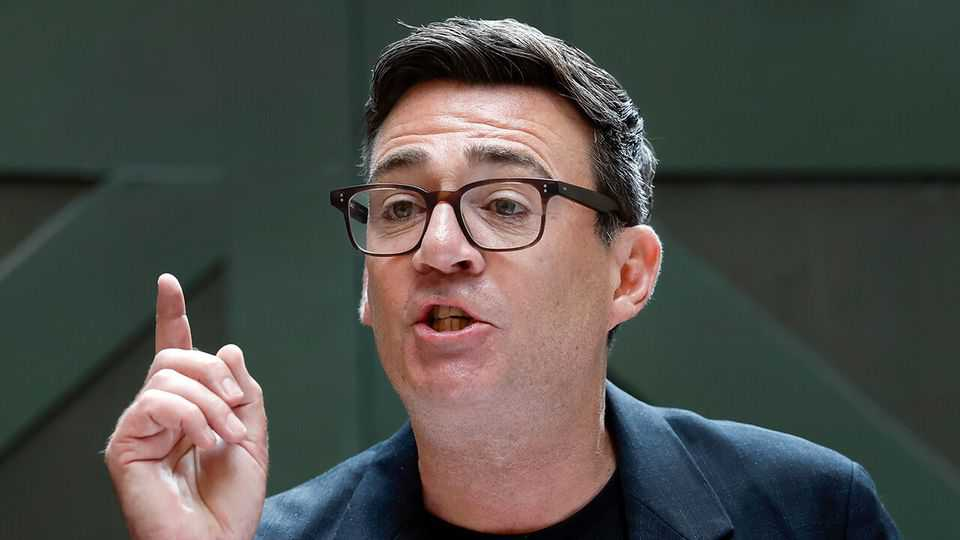

Is Andy Burnham more than just a smart-casual Sir Keir Starmer?
Britain’s next prime minister outlines plans that look a lot like those of the outgoing one
July 2nd 2026

“I AM GOING to give Britain the circuit-breaker it needs,” Andy Burnham promised as he set out for the first time what he wants to do if—or rather, when—he becomes prime minister. In the opening speech of his campaign for the Labour Party leadership on June 29th, the former mayor of Greater Manchester acknowledged that more of the same would not be enough for him to succeed where Sir Keir Starmer had failed.
The contest to find a new Labour leader, and therefore prime minister, does not officially begin until July 9th. In reality it is as good as over. No other candidate has come forward. Barring some freak occurrence, Mr Burnham will be named party leader on July 17th and enter 10 Downing Street on July 20th.
Mr Burnham’s easy self-confidence, in a tight black T-shirt, presents a striking contrast to the Starmer premiership. “A Uniqlo man who can pull off a pair of Birkies”, wrote the Times. But his policy agenda, as far as one exists, looks more similar to the status quo. In his speech, delivered on his home turf in Manchester, he called for every region to have “clear and credible industrial ambitions”—little different from Sir Keir’s industrial strategy that promised to “enable investment and growth in city regions and clusters across the UK”. Public procurement should be overhauled to benefit “our own British-based suppliers”; this is what Rachel Reeves, the chancellor, once called “securonomics”.
On education, Mr Burnham wants a shift away from a system “configured entirely around the university route”—exactly in line with Sir Keir’s plans, which aimed to offer students more access to technical courses. The heir-presumptive wants to reform business taxes to benefit the high street, and to build record amounts of subsidised housing; so did Sir Keir and Ms Reeves (although Mr Burnham focuses specifically on council houses, which are fully owned by the state, rather than the broader “social and affordable” category).

Yet there are reasons to think that Mr Burnham could surpass his predecessor’s achievements even without a big change in policy direction. Voters view him as more likeable, decisive and strong than they did Sir Keir when he took office, according to YouGov polling (see chart). Labour MPs who saw how he beat both Reform UK and the Green Party, populist insurgents from right and left, in the recent Makerfield by-election that brought him back to the House of Commons, will cut him more slack than their outgoing leader. His promise to use the parliamentary whipping system less aggressively could lift the mood in his party, as well as being the start of wider constitutional change he claims will help politics work better.
And the speech contained hints of greater radicalism. Mr Burnham promised that Whitehall’s obsession with hoarding power would be “over for good”. The first step will be moving some of the functions of Downing Street to Manchester in a new “Number 10 North” unit—a largely symbolic move that could nonetheless prove to the civil service that he is serious about doing things differently.
He has also expressed support for greater fiscal devolution: Britain raises just 5% of its tax revenue locally, less than any rich country of similar size. Mr Burnham pledged to allow local administrations to “take greater public control of essential services like water, housing, energy and transport”. It is unclear whether this means old-school nationalisation, which would be fiddly and expensive, or a more flexible hybrid model.
Mr Burnham left many more questions unanswered in his first big policy speech. For a man who claims that communication is a great strength, it was odd to start with a relatively short speech and no chance for questions from journalists. He did not mention “AI”, “productivity”, “the deficit”, “migration”, “China” or “Trump”. Nor did he speak like a man who realises how quickly his popularity could ebb: he talked of “a ten-year mission to raise people’s living standards”, evoking ominous memories of Sir Keir, Boris Johnson and Theresa May, all of whom said they wanted a decade in charge and none of whom lasted much past three years. Three years, give or take, is the time between now and the last possible date of the next general election. Mr Burnham must act fast to prove he is more than just a smart-casual Starmer.■
For more expert analysis of the biggest stories in Britain, sign up to Blighty, our weekly subscriber-only newsletter.